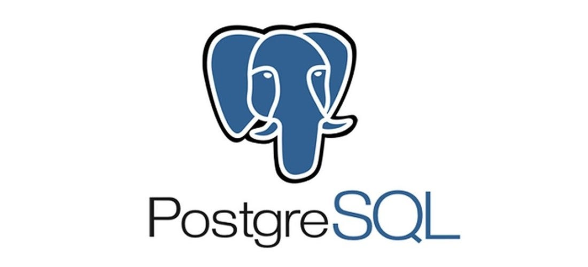

Adatbázisok a webfejlesztésben
A webfejlesztés során az adatok tárolásához adatbázisokat is használunk, például MySQL, PostgreSQL vagy MongoDB rendszereket. Ezek segítségével tartósan tárolhatók a felhasználói adatok, bejegyzések, termékek és egyéb információk.
MySQL
A MySQL egy nyílt forráskódú relációs adatbázis-kezelő rendszer, amely széles körben elterjedt webalkalmazásokban. Kiválóan alkalmas strukturált adatok tárolására és lekérdezésére.
Előnye, hogy könnyen kezelhető, nagy közösség támogatja, és számos webes keretrendszerrel jól integrálható. Ideális választás olyan projektekhez, ahol az adatok jól strukturáltak és relációkban vannak egymással.
PostgreSQL
A PostgreSQL egy fejlett, nyílt forráskódú relációs adatbázis-kezelő, amely támogatja a komplex adatstruktúrákat és fejlett lekérdezéseket, valamint nagy megbízhatóságot biztosít.
Kiemelkedik a szabványos SQL támogatásával, bővíthetőségével és erős tranzakciókezelésével. Olyan alkalmazásokhoz ajánlott, ahol fontos a nagy teljesítmény, az adatbiztonság és a komplex adatmodellezés.
MongoDB
A MongoDB egy dokumentum-orientált NoSQL adatbázis, amely rugalmas adatmodellezést tesz lehetővé, és kiválóan alkalmas nagy mennyiségű, strukturálatlan adat kezelésére.
Előnye, hogy könnyen skálázható, gyors fejlesztést tesz lehetővé, és jól alkalmazható olyan projektekben, ahol az adatok változatos formátumúak vagy gyakran változnak. Ideális modern webalkalmazásokhoz, amelyek nagy mennyiségű, dinamikus adatot kezelnek.